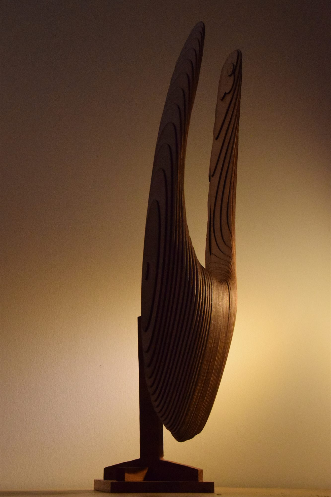

Purpose
Earth Original Design
Earth Original Design creates things that expand what people can do with their lives, at every scale from a lamp to a settlement.

01 · Scale
Objects
Product design: lighting, household, tactile controls and furniture.
4 works · 1 in development
02 · Scale
Habitats
Shelter and living: portable homes, interiors, workshops and shared places.
1 proposition · open ground
03 · Scale
Systems
Movement and place: mobility, energy and settlements.
1 concept · open ground
Catalogue
Every work numbered, and honest about its stage.


The charter
Four commitments every piece of work keeps.
01
Expand human capability
Give people something meaningful they could not previously do, access or sustain.
02
Make progress accumulate
Work stays useful, repairable and adaptable, so it improves with time instead of being replaced.
03
Make the experience complete
Buying, understanding, using, repairing and getting support are all part of the design.
04
Let ambition become tangible
Build enough of an idea that people can encounter its value directly.
Lab notes
Development, in the open.